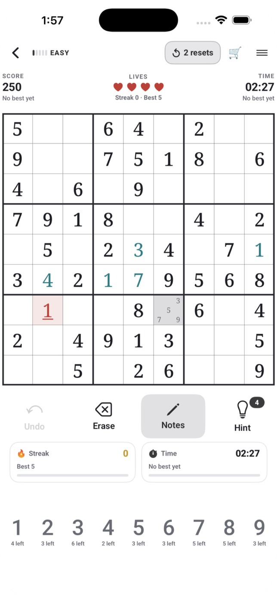
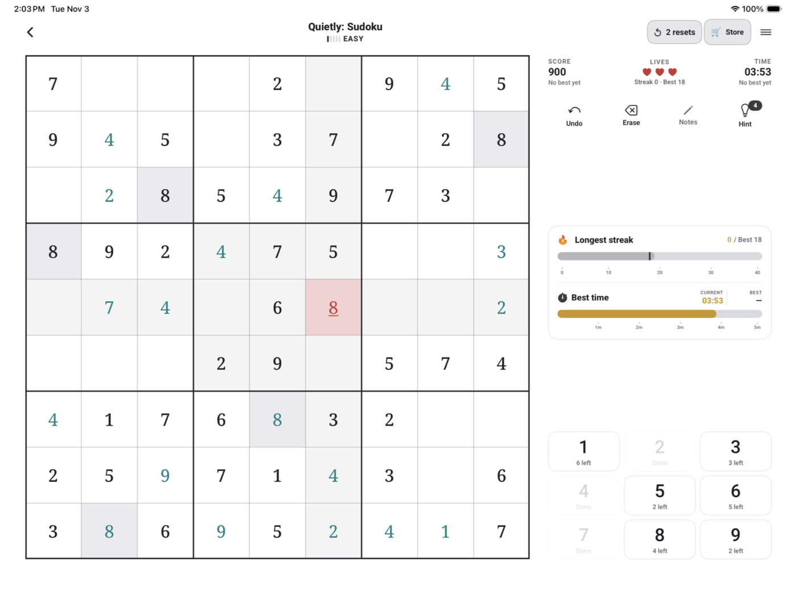
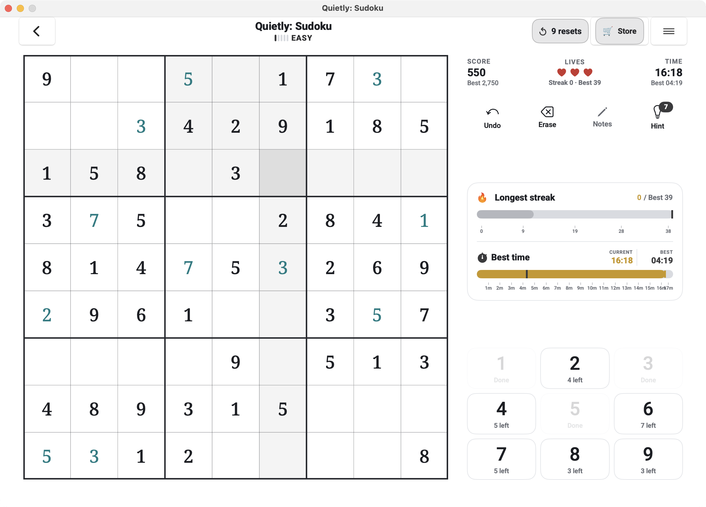

Hints that teach
Step-by-step clues point you to the deduction first, so you learn the technique instead of copying the answer.
For iPhone, iPad & Mac
A clean board, hints that teach the next step instead of giving it away, and nothing else asking for your attention.



In motion
A quick look at the board, the hints and every screen it plays on. Turn the sound on for the full effect.
How it plays
You compete only against your own records. There are no leaderboards, no sign-in and no pause button, so every best time is a real one.
Easy and Medium are open from the start. Solve three puzzles at a level to unlock the next: Hard, then Expert, then Master.
You start with five of each, shared across every level. Lives come back one every 20 minutes and hints one every hour, up to three of each.
A reset adds three lives and three hints, clears your wrong numbers and keeps your correct work. You start with two.
Each unlocked level has a fresh daily puzzle with no lives, hints or score. Just you and the grid.
Features
Step-by-step clues point you to the deduction first, so you learn the technique instead of copying the answer.
Puzzles are graded by the techniques they take to solve, not by how many clues they show.
Pencil marks are never filled in for you. The solving stays yours.
Best scores, best times and clean streaks, measured only against yourself.
Six calm board themes including a low-glare dark one, larger numbers, left-handed controls and sound you can switch off.
Plays offline with no account. If you use iCloud, your progress syncs through your own private iCloud storage.
iPhone · iPad · Mac
The full, uncropped app on each device.
Requirements
Free on the App Store